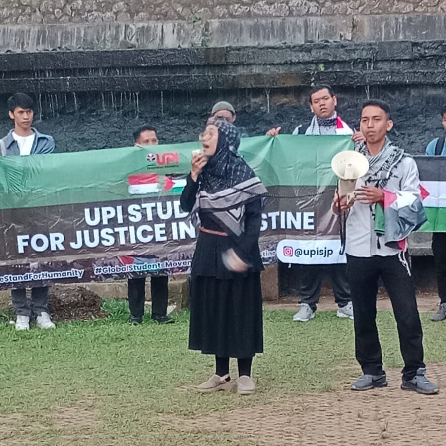
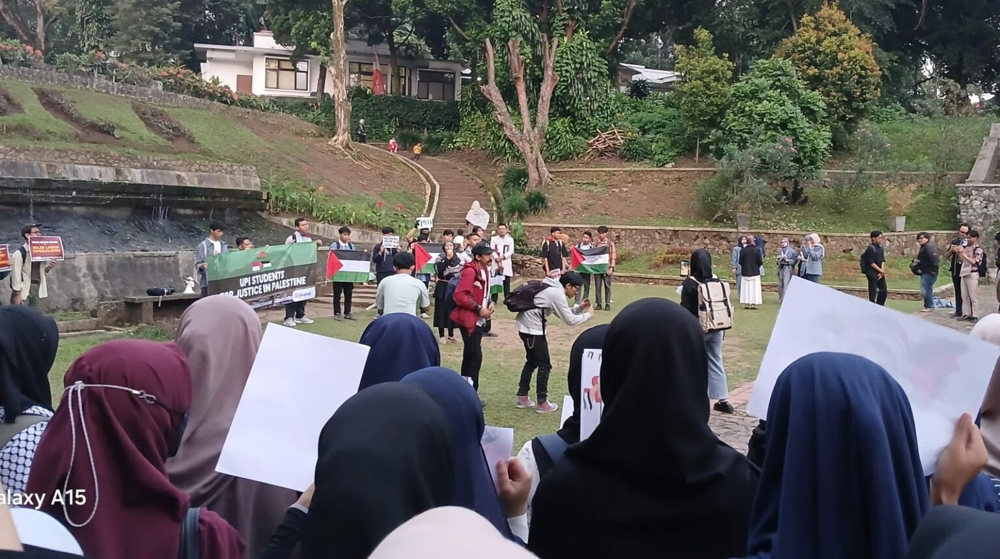
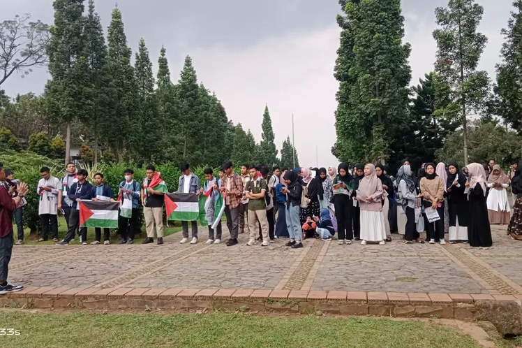
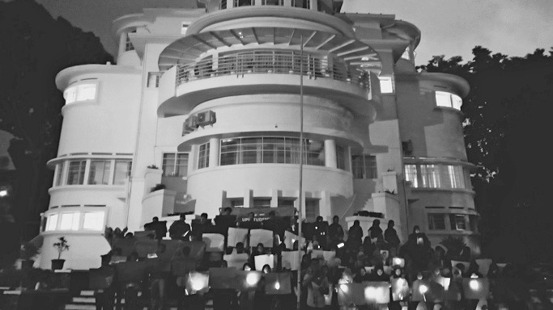
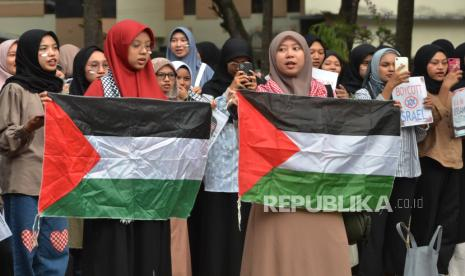
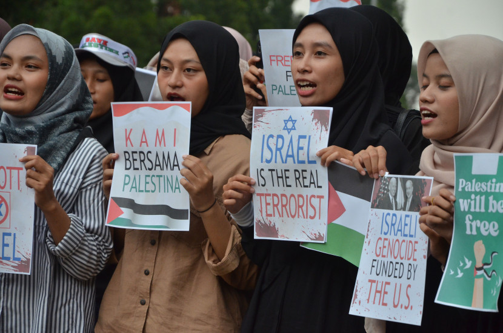
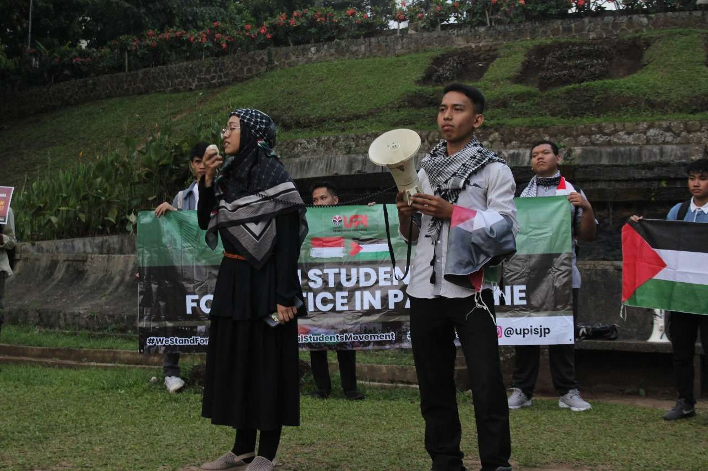
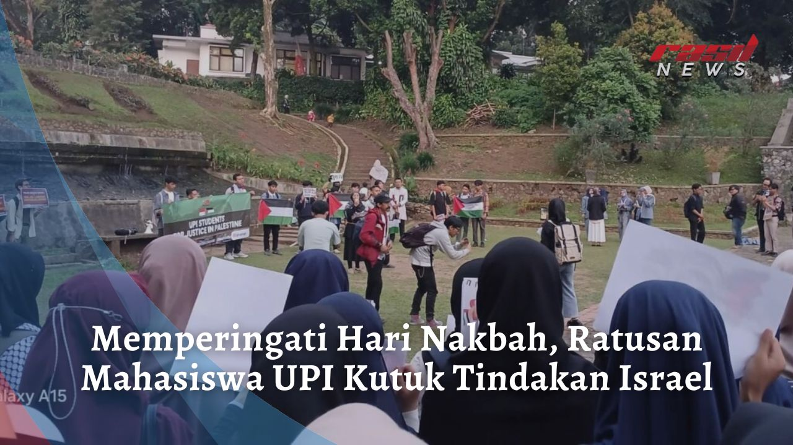

UPI SJP
UPI SJPKajian Isu
Berfokus pada pengkajian dalam membuat tulisan terkait sejarah terjadinya pejajahan Palestina oleh Israel, kondisi terkini di Palestina, serta hal-hal lain yang berkaitan dengan isu Palestina untuk bahan konten feeds.
Media Kreatif
Berfokus pada pembuatan desain feeds, poster, editing video reels dengan bahan konten yang sudah dibuat tim kajian isu, dan mengelola akun instagram @upisjp
Manajemen Aksi & Propaganda
Berfokus pada perencanaan ide-ide propaganda kampanye tentang Palestina dan pelaksanaan aksi-aksi kreatif yang dilakukan dalam ruang lingkup kampus UPI untuk terus merawat isu mengenai kepalestinaan.
Relasi Strategis
Berfokus pada kerjasama dan menjalin hubungan dengan organisasi, UKM, SJP lainnya, maupun komunitas yang memiliki tujuan sama dalam menyuarakan kemanusiaan untuk Palestina, serta melakukan partnership dengan media berita.
Gabung Grup WhatsApp
Mari bergabung ke dalam grup dengan klik tombol berikut agar memudahkanmu dalam berpartisipasi di setiap agenda UPI SJP.
Berita Media
BriliaNews.com
Kota Bandung, BriliaNews.com – Civitas academica Universitas Pendidikan Indonesia (UPI) yang tergabung dalam Student for Justice in Palestine (SJP), menyampaikan pernyataan sikap sebagai bentuk dukungan untuk keadilan di Palestina.
Koordinator UPI SJP Galvin Eka Nurullah mengatakan pernyataan sikap ini merupakan komitmen civitas academica UPI, untuk terus berjuang dan mendukung ditegakkannya hak asasi manusia dan keadilan bagi bangsa Palestina.
“Sebanyak 35.000 lebih nyawa melayang akibat eskalasi penjajahan Palestina oleh Zionis Israel. 200 hari lebih genosida yang terjadi sejak peristiwa 7 Oktober 2023, membuka mata seluruh dunia. 76 tahun peringatan Nakba, yakni sebuah tragedi kemanusiaan yang mengusir secara paksa 750.000 lebih orang Palestina dari tanah miliknya,” ujar Galvin dalam siaran persnya, Kamis (16/5/2024).
Baca BeritaMINANews.net
Bandung, MINA – Memperingati hari Nakbah pada setiap 15 Mei, ratusan Mahasiswa Universitas Pendidikan Indonesia (UPI) Bandung Jawa Barat yang tergabung dalam Student For Justice in Palestine (SJP) menggelar Aksi Solidaritas Palestina di depan Gedung Rektorat ISOLA UPI. Rabu, (15/5).
Kontributor MINA di Bandung, Nabila Cameliani Khadijah melaporkan aksi yang dihadiri ratusan mahasiswa bertujuan mengutuk keras genosida Israel terhadap Palestina dan menyuarakan kekejaman, kebiadaban, kebengisan imperialisme AS dan Zionis yang telah berlangsung sejak 76 tahun lalu.
Pernyataan sikap yang dibacakan Koordinator SJP UPI, Galvin Eka Nurullah, di hadapan ratusan peserta aksi Solidaritas Palestina, berisi lima poin.
Baca BeritaAYOBANDUNG.com
SUKASARI, AYOBANDUNG.COM -- Mahasiswa Universitas Pendidikan Indonesia (UPI) yang tergabung dalam Students for Justice in Palestine (SJP) menyayangkan dukungan beberapa negara terhadap tindakan Israel terhadap Palestina.
Menurut Koordinator SJP UPI Galvin Eka Nurullah, pihaknya mengeluarkan lima pernyataan sikap atas tindakan Israel terhadap Palestina. Mengingat saat ini sudah ada 35.000 lebih nyawa melayang akibat eskalasi penjajahan Palestina oleh Zionis Israel. 200 hari lebih genosida yang terjadi sejak peristiwa 7 Oktober 2023 membuka mata seluruh dunia.
76 tahun peringatan Nakba, yakni sebuah tragedi kemanusiaan yang mengusir secara paksa 750.000 lebih orang Palestina dari tanah miliknya.
Baca BeritaBANDUNG BERGERAK
BandungBergerak.id - Gerakan Solidaritas Universitas Pendidikan Indonesia (UPI) Students For Justice In Palestine (UPISJP) mengadakan aksi solidaritas untuk Palestina bersamaan dengan peringatan 76 tahun peristiwa Nakba. Aksi yang diikuti masyarakat sipil ini juga sebagai bentuk dukungan gerakan mahasiswa internasional yang menyoroti isu Palestina.
Gerakan UPISJP digelar di Taman Baretti Kampus UPI Bumi Siliwangi, Bandung, Rabu, 15 Mei 2024 sore. Aksi damai ini melibatkan serangkaian kegiatan, yaitu mimbar bebas, pembentukan mozaik bendera Palestina, serta kegiatan edukasi dan riset yang bertujuan untuk meningkatkan kepekaan mahasiswa UPI terhadap isu Palestina.
Koordinator aksi Galvin Eka Nurullah menjelaskan, tujuan dari gerakan solidaritas ini adalah untuk mengingat peristiwa Nakba yang monumental bagi Palestina serta mendukung gerakan mahasiswa internasional yang berpihak kepada Palestina. Gerakan solidaritas ini tidak hanya berhenti pada satu hari saja, melainkan akan diikuti dengan kajian-kajian lebih lanjut untuk mendalami pemahaman mahasiswa tentang isu-isu yang terjadi di Palestina.
Baca BeritaREPUBLIKA
REPUBLIKA.CO.ID, BANDUNG -- Puluhan mahasiswa Universitas Pendidikan Indonesia (UPI) menggelar aksi Solidaritas Palestina, UPI Students For Justice in Palestine di Taman Baretti UPI, Kampus UPI, Kota Bandung, Rabu (15/5/2024).
Aksi tersebut bertepatan dengan peringatan 76 tahun hari Nakba atau hari peringatan peristiwa pengusiran Bangsa Palestina yang mendorong terbentuknya Negara Israel.
Dalam aksi itu para mahasiswa menyampaikan kepedulian atas kondisi krisis kemanusiaan yang terjadi di Palestina.
Baca BeritaBandung 24 Jam
BANDUNG--Puluhan mahasiswa Universitas Pendidikan Indonesia (UPI) yang tergabung dalam UPI Students For Justice in Palestine, menggelar aksi solidaritas Palestina di Taman Baretti UPI, Jalan Setiabudi, Kota Bandung, Jawa Barat, Rabu (15/5/2024). Aksi tersebut bertepatan dengan peringatan 76 tahun Nakba yaitu peristiwa terusirnya Bangsa Palestina oleh Israel.
Dalam kesempatan itu, koordinator aksi Galvin Eka Nurullah mengatakan, saat ini sudah ada 35.000 lebih nyawa melayang akibat eskalasi penjajahan Palestina oleh Zionis Israel. Sudah 200 hari lebih genosida yang terjadi sejak peristiwa 7 Oktober 2023, dan itu telah membuka mata dunia bagaimana parahnya krisis kemanusiaan yang terjadi di Palestina.
Baca BeritaRRI Bandung
Civitas academica Universitas Pendidikan Indonesia (UPI) yang tergabung dalam Student for Justice in Palestine (SJP), mengadakan aksi solidaritas terhadap Palestina di pelataran Universitas Pendidikan Indonesia, Kamis (16/5/2024) para pengunjuk rasa tersebut menyampaikan pernyataan sikap sebagai bentuk dukungan untuk keadilan di Palestina. Kamis(16/5/2024).
Koordinator UPI SJP Galvin Eka Nurullah mengatakan pernyataan sikap ini merupakan komitmen civitas academica UPI, untuk terus berjuang dan mendukung ditegakkannya hak asasi manusia dan keadilan bagi bangsa Palestina.
“Sebanyak 35.000 lebih nyawa melayang akibat eskalasi penjajahan Palestina oleh Zionis Israel. 200 hari lebih genosida yang terjadi sejak peristiwa 7 Oktober 2023, membuka mata seluruh dunia. 76 tahun peringatan Nakba, yakni sebuah tragedi kemanusiaan yang mengusir secara paksa 750.000 lebih orang Palestina dari tanah miliknya,” ujar Galvin dalam siaran persnya, Kamis (16/5/2024).
Baca BeritaRadio Silaturahim
Bandung, Rasilnews – Ratusan mahasiswa dari Universitas Pendidikan Indonesia (UPI) Bandung, Jawa Barat, yang tergabung dalam kelompok Student For Justice in Palestine (SJP), mengadakan aksi solidaritas untuk Palestina di depan Gedung Rektorat ISOLA UPI. Aksi ini dilaksanakan pada Rabu (15/5).
Menurut laporan kontributor MINA di Bandung, Nabila Cameliani Khadijah, aksi yang dihadiri oleh ratusan mahasiswa ini bertujuan untuk mengecam keras tindakan Israel terhadap Palestina, serta menyuarakan kekejaman dan penindasan yang dilakukan oleh imperialisme AS dan Zionis yang telah berlangsung selama 76 tahun.
Galvin Eka Nurullah, Koordinator SJP UPI, menyatakan bahwa lebih dari 200 hari genosida yang dimulai sejak peristiwa 7 Oktober 2023 telah membuka mata dunia. Pada peringatan 76 tahun Nakbah ini, tragedi kemanusiaan yang mengakibatkan pengusiran paksa lebih dari 750.000 warga Palestina dari tanah mereka terus dikenang.
Baca BeritaSeruan untuk Terus Mendukung Upaya Kemerdekaan Palestina
Galeri Kegiatan
Berikut merupakan gambaran dari kegiatan yang dilaksanakan oleh UPI SJP yang pastinya seru dan menyenangkan.

{kind=link}

{kind=link}


{kind=link}

Edukasi Seputar Palestina
Mari kita sama-sama mengedukasi diri sendiri mengenai isu seputar kepalestinaan melalui laman dari smart171 di link berikut.
Frequently Asked Questions
Pertanyaan-pertanyaan seputar komunitas UPI SJP
-
UPI SJP itu masuknya organisasi atau bukan ya?
Sesuai profilnya, UPI SJP tidak terikat dan/atau dibawah naungan organisasi atau UKM manapun ya... namun kegiatannya bisa berkolaborasi dengan UKM atau semacamnya. Jadi jelas bahwa UPI SJP ini bentuknya komunitas ya, bukan organisasi!
-
Apakah kalau ikut volunteer UPI SJP harus selalu stand by untuk ikut agendanya?
Pembagian peran di UPI SJP dimaksudkan agar komunitas ini bisa terarah ke depannya, kamu bisa ikut kontribusi secara fleksibel kok, nggak ada tuntutan kamu harus stand by. Kalau memang kamu lagi free dan ingin bersuara terkait Palestina maka kamu bisa membuat aksi atau karya sesuai divisi pilihanmu saat pendaftaran volunteer ya!
-
Mahasiswa baru apakah boleh ikut UPI SJP?
Kenapa nggk? tentunya boleh dong, bahkan bukan hanya mahasiswa lohh! volunteer ini dibuka untuk seluruh sivitas akademika UPI bahkan hingga alumni, dosen, pegawai, maupun karyawan. Jadi tunggu apa lagi? mari menambah relasi dengan bergabung komunitas UPI SJP
-
UPI SJP bakalan ada aksi lagi nggak nih?
insyaaAllah UPI SJP ini dibuat untuk menyuarakan kemanusiaan terkait isu Palestina secara konsisten ya.. meskipun nggak sering, tapi kita akan terus merawat awareness tentang Palestina. Jadi bakalan ada lagi nih ke depannya, nanti bergantung pada ide teman-teman juga loh!
-
UPI SJP ini sekretariatnya dimana ya?
Halo kak, sekali lagi UPI SJP ini bentuknya komunitas ya, maka nggak ada sekretariat khususnya, terus kalau nyimpen barang-barangnya dimana? jawabannya biasanya dititipkan di sekretariat UKM. Tapi bukan berarti UPI SJP ini dibawah naungan UKM ya...